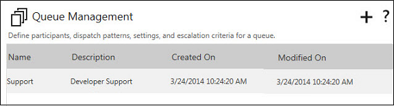
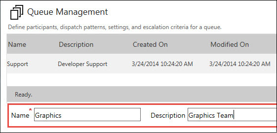
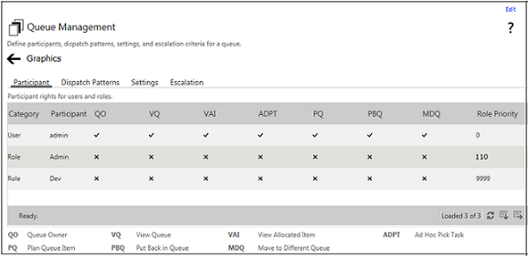

No
You use the Queue Management window to define the queue.
The Queue Control displays the following image when launched. It lists all the queues that have already been added in a grid.
The following image shows the Queue Management window:

You can click the New Queue button to add a new queue. When you click the New Queue button in the previous window to add a new queue, it displays the Name and Description fields below the queue list, to enter a name and description for the new queue. You can enter the name and description and click on the Add button. This will add the new list and open the settings view of the Queue Management window.
Note: Ensure that the Queue Name that you enter does not exceed 250 characters, and the Queue Description does not exceed 150 characters.
The following image shows Queue Management window with fields for adding new queue:

Queue Management Configuration View:
The following image shows the Configuration view of the Queue Management window:

You see this window when you click Add after specifying the name and description for a new queue. You can configure the different queue settings here for the new queue. This window has the following tabs, which opens the corresponding view.
After you configure all the settings, click the View List button to return to the main Queue Management window. The new queue is added to the Queue List. Right-click on the row corresponding to the new queue, and select the Edit option from the context menu to open the configuration view to edit its settings, if required. Alternatively, double-click on the queue row to open this view.